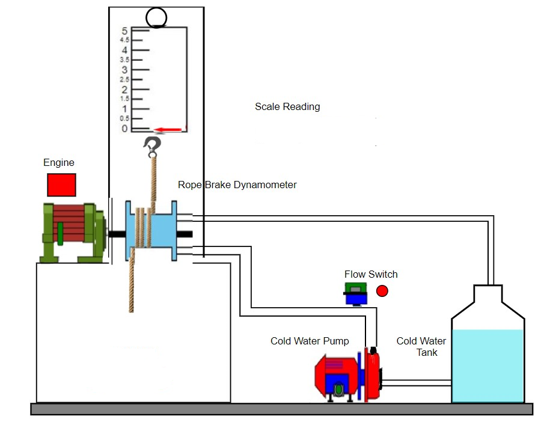

COEP Technological University , PUNE
Procedure
Message Box
×
...
CONFIGURATION OF ROPE BRAKE DYANAMOMETER
ROPE BRAKE DYANAMOMETER CHARACTERIZATION DIAGRAM


 COEP Technological University , PUNE
COEP Technological University , PUNE
COEP Technological University , PUNE
COEP Technological University , PUNE